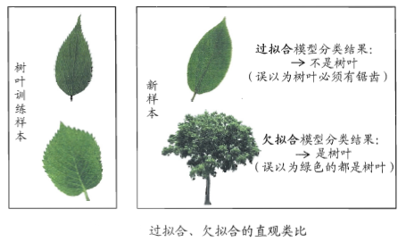
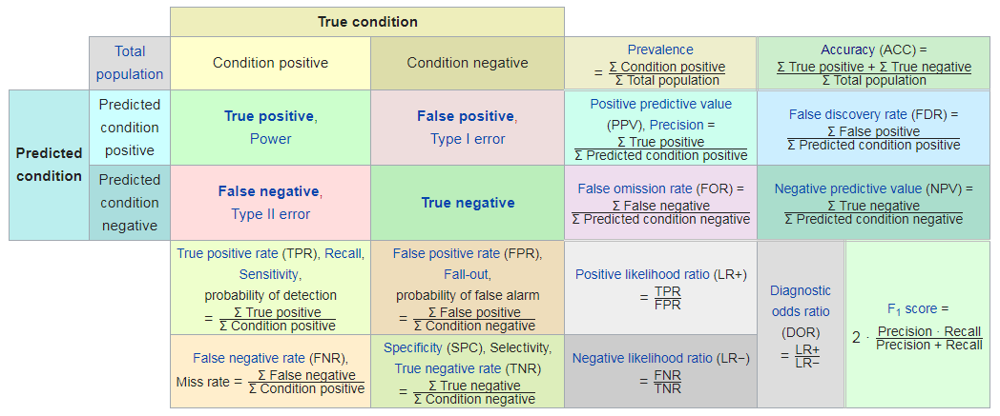

没有测量，就没有科学。 —— 门捷列夫
模型评估是模型开发过程不可或缺的一部分。 它有助于发现表达数据的最佳模型和所选模型将来工作的性能如何。 在数据挖掘中， 使用训练集中的数据评估模型性能是不可接受的， 容易过拟合。 为了避免过拟合，都使用模型没有遇到过的测试集来评估模型性能。
为什么要做模型评价
想找到最有效的模型.模型的应用是循环迭代的过程,只有通过持续调整和调优才能适应在线数据和业务目标.
选用模型开始都是假设数据的分布是一定的,然而数据的分布会随着时间的移动而改变，这种现象称为分布漂移（Distribution Drift）。验证指标可以对模型在不断新生的数据集上进行性能跟踪。当性能开始下降时，说明该模型已经无法拟合当前的数据了，因此需要对模型进行重新训练了。 模型能够拟合新的数据称为模型的泛化能力。
怎么检验和评估模型
机器学习过程分为原型设计阶段（Prototyping）与应用阶段（Deployed）。其中原型设计阶段（Prototyping）为离线评估，应用阶段（Deployed）为在线评估(online evaluation).
Prototyping阶段是使用历史数据训练一个适合解决目标任务的一个或多个机器学习模型，并对模型进行验证（Validation）与离线评估（Offline evaluation），然后通过评估指标选择一个较好的模型。
Deployed阶段是当模型达到设定的指标值时便将模型上线，投入生产，使用新生成的在线数据来对该模型进行在线评估（Online evaluation）。在线测试不同于离线测试，有着不同的测试方法（最常见的便是A/B testing，它是一种统计假设检验方法）以及评价指标（在线评估时会采用业务指标,如用户点击率等，而离线评估则采用不同的评估指标,如常用的经验误差的方法）。
模型评估
在离线评估阶段从历史数据据获取数据集校验模型的方法包括训练集-验证集二划分校验（Hold-out validation）、交叉校验（Cross-validation）, 另一种方式是重采样技术，如bootstrapping与Jackknife,此类方法可以充分利用现有数据信息,一定程度减少过拟合。
模型性能离线评估方法
我们把学习器在训练集上的误差称为“训练误差”或“经验误差”, 在新样本上的误差称为“泛化误差”。
在很多情况下，我们可以学得一个经验误差很小，在训练集上表现很好的学习器。 这也是学习器学习的目标。 但很多情况下，训练集上表现良好的学习器，在面对新样本时，表现并不好。 这并不是我们真正想要的。
我们真正想要的是泛化误差小的学习器， 即在新样本上能够表现很好的学习器。 为了达到这个目的， 应该从训练样本中尽可能学出适用于所有潜在样本的“普遍规律”， 这样此案嗯在遇到新样本时作出正确的判断。 然而，当学习器把训练样本学得“太好了”，就很可能把训练样本自身的一些特点当作所有潜在样本都会具有的一般性质，这样就会导致泛化性能下降。 这就是“过拟合”。 与之相对的是“欠拟合”，即连训练样本的一般性质尚未学好。

导致过拟合的原因是学习器学习能力过于强大，把训练样本不太一般的特性都学到了，而欠拟合通常是由于学习能力低下造成的。 欠拟合比较容易克服，例如在决策树中扩展分枝，神经网络增加训练轮数； 而过拟合则比较麻烦。 过拟合是机器学习面临的关键障碍，各类学习器都必然带有一些针对过拟合的措施。 同时，过拟合是无法彻底避免的。
我们往往有多种学习算法可供选择，甚至同一个算法也可以配置不同的参数。 那么究竟该选用哪一个学习算法，哪一种参数配置呢？ 这就是机器学习中的“模型选择(model selection)” 问题。 理想的方案是度候选模型的泛化误差进行评估，然后选择泛化误差最小的那个模型。 然而在模型构建时我们无法获得泛化误差，而训练你误差又由于过拟合现象的存在而不适合作为标准。 那么，现实中如何进行模型评估与选择呢？
通过实验测试对学习器的泛化误差进行评估并选择。 为此，需使用一个测试集(testing set) 来测试学习器对新样本的判别能力，然后以测试集上的“测试误差” 作为泛化误差的近似估计。 但需要注意的是，测试集应该尽可能与训练集互斥，即测试样本尽量不在训练集中出现、 未在训练过程中使用。
我们只有一个数据集，既要训练，又要测试。实现方法是： 从该数据集中产生出训练集和测试集。
留出法(Hold-out validation)
使用这种方法时，通常大的数据集会被随机分成2个子集，1个用于训练，1个用于测试。 或数据量更大时，将训练集拆分成3个子集，1个用于训练，1个用于模型选择和参数优化，1个用于测试。
需要注意的是，这种数据集划分相当于“分层采样(Stratified Sampling)”。 另外一个问题是，单次使用留出法得到的估计结果往往不够稳定可靠，在使用时，一般采用若干次随机划分重复实验评估后取平均值作为留出法的评估结果。 例如进行100次随机划分，每次产生一个训练/测试集用于实验评估，100次后就得到100个结果，而留出法返回的则是这100个结果的平均。
最后一点是，训练样本过多则训练接近于使用全量样本，过少则与全量样本相差过大，可能也无法学习出“普遍规律”。 对于这一点，也没有完美的解决方案，常见做法是2/3 - 4/5用于训练。
训练集(Training set)： 用于构建模型
验证集(Validation set)： 用于评估训练阶段所得模型的性能。 它为模型参数优化和选择最优模型提供了测试平台
测试集(Test set)： 用于评估模型未来可能的性能(泛化能力)
为什么不能在训练集上直接验证？ 训练误差小的，泛化误差不一定小。
交叉检验(Cross Validation)
当仅有有限数量的数据时， 可以使用k折交叉验证(k-fold cross validation)。使用这种方法时， 数据被随机分成k份大小与结构均相似的互斥的子集。 然后，每次用k-1个子集的并集用于训练，余下的那个作为测试集。 进行k次训练。 最终使用k个学习器性能平均预测未来可能的性能。 k最常见的取值是10。 其他常用的还有5，20(实际中，还需要考虑时间，存储开销等其他因素。 如果学习器本身比较复杂，k如果较大则意味着时间和存储的开销都会比较大)。
与留出法相似，将数据集划分为k个子集同样存在多种划分方式，为减小因样本划分不同而引入的差别, k折交叉验证通常要重复p次不同的随机划分，最终的评估结果是这p次交叉验证结果的均值，常见的是10次10折交叉验证。（平均的平均，去掉划分的影响）
自助法在数据集较小，难以有效划分训练/测试集时很有用； 此外，自助法能从初始数据集中产生多个不同的训练集，这对集成学习等方法有很大的好处。 然而，自助法产生的数据集改变了初始数据集的分布(而这恰好是集成学习需要的)，这会引入估计偏差。
在初始数据量足够时，留出法和交叉验证法更常用一些。
自助法
我们希望评估的是用D训练出的模型。 由于保留了一部分样本用于测试， 这必然会引入一些因训练样本规模不同而导致的伏击偏差。 留一法虽受训练样本规模的变化影响较小，但是计算复杂度太高。 自助法(Boostraping)就是一个比较好的解决方案。
评估过程中如何调优
在进行模型评估与选择时，除了要对适用学习算法进行选择，还需要对参数进行设定。 这就是通常所说的“参数调节(Parameter Tuning)”。 参数除了模型参数还有超参数（hyperparameters）。例如logistic回归中的特征系数为模型参数,需要使用多少个特征进行表征，特征的数目这个参数便是该模型的超参数。 调参和算法选择没什么本质区别： 对每种参数配置都训练出模型，热爱后把对应最好模型的参数作为结果。 需要注意的一点是学习算法的很多参数是在实数范围内取值。 现实中常用的做法是对每个参数选定一个范围和变化步长。 这样选定的参数往往不是“最佳”值，但这是在计算开销和性能估计之间进行折中的结果。 在很多强大的学算法中有大量参数需要设定，这将导致极大的调惨工程量。 以至于在不少应用任务中，参数调得好不好往往对最终模型性能有关键性影响。
可以用格搜索（grid search）、随机搜索（random search）以及启发式搜索（smart search）等进行Hyperparameter tuning, 从超参数空间中寻找最优的值。
格搜索(grid search)
格搜索便是将超参数的取值范围划分成一个个格子,对每一个格子所对应的值进行评估，选择评估结果最好的格子所对应的超参数值。例如，对于决策树叶子节点个数这一超参数，可以将值划分为这些格子：10, 20, 30, …, 100, …
随机搜索（random search）
它是格搜索的变种。相比于搜索整个格空间，随机搜索只对随机采样的那些格进行计算，然后在这中间选择一个最好的。因此随机搜索比格搜索的代价低。
需要注意的是，在模型评估与选择过程中由于需要留出一部分数据进行评估测试，事实上只使用了一部分数据训练模型。 在模型选择完成后，学习算法与参数配置已选定， 应该用全量数据集重新训练模型。 这个模型训练过程中使用了所有样本，才是最终提交的模型。
模型评价指标(性能度量)
对学习器泛化性能进行评估，不仅要有有效可行的实验估计方法，还需要有衡量泛化能力的评价标准，这就是性能度量(performance measure).
https://blog.csdn.net/u014182497/article/details/79384233
回归任务
mse
rmse
mae
mape(Mean Absoloute Precentage Error)
分类任务
recall
precision
F1
P-R曲线
P-R曲线绘制方法： 纵轴P，横轴R. 点： 根据预测结果，概率从高到低，按顺序逐个把样本作为positive进行预测，每次可计算出当前的R和P
缺点：有交叉时不好比较，更好的方法是计算面积，但这个区域不好估算。 所以设计了一些综合考虑两者的性能度量指标。
R和P的调和平均
一种情形是，我们有多个二分类混淆矩阵，例如进行了多次训练，每次得到一个混淆矩阵；或者执行多分类任务，每两两类别组合都对应一个混淆矩阵；…… 这时，我们希望在n个二分类混淆矩阵上综合考虑R和P。 一种直接的做法是先计算每个混淆矩阵的R和P,再求平均值。 这样就得到“macro-”系的性能度量指标； 还可以先将个混淆矩阵对应元素进行平均，得到TP, FP, FN, TN的平均值，再计算P,R, 这种算法得到的是“micro-”系。
macro-P
macro-R
macro-F1
micro-P
micro-R
micro-F1
ROC
ROC和PR类似，ROC曲线绘制方法： 纵轴FPR，横轴TPR. 点： 根据预测结果，概率从高到低，按顺序逐个把样本作为positive进行预测，每次可计算出当前的TPR和FPR

AUC
PR
All models are wrong. But some are useful.